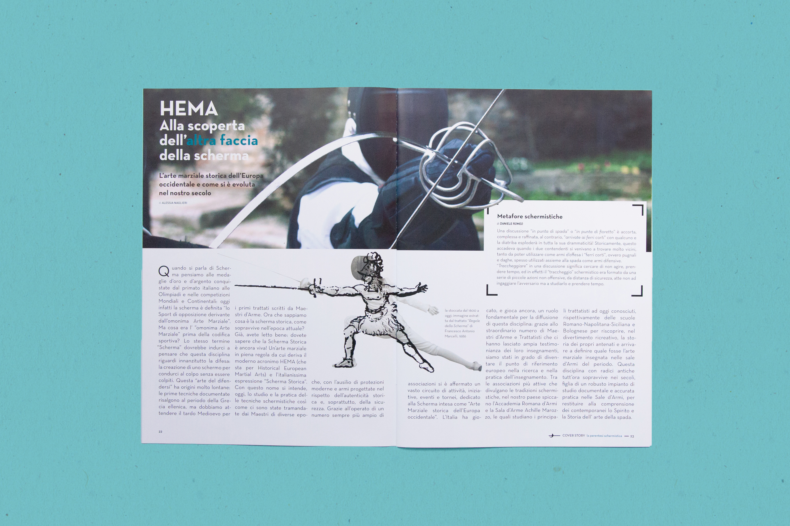
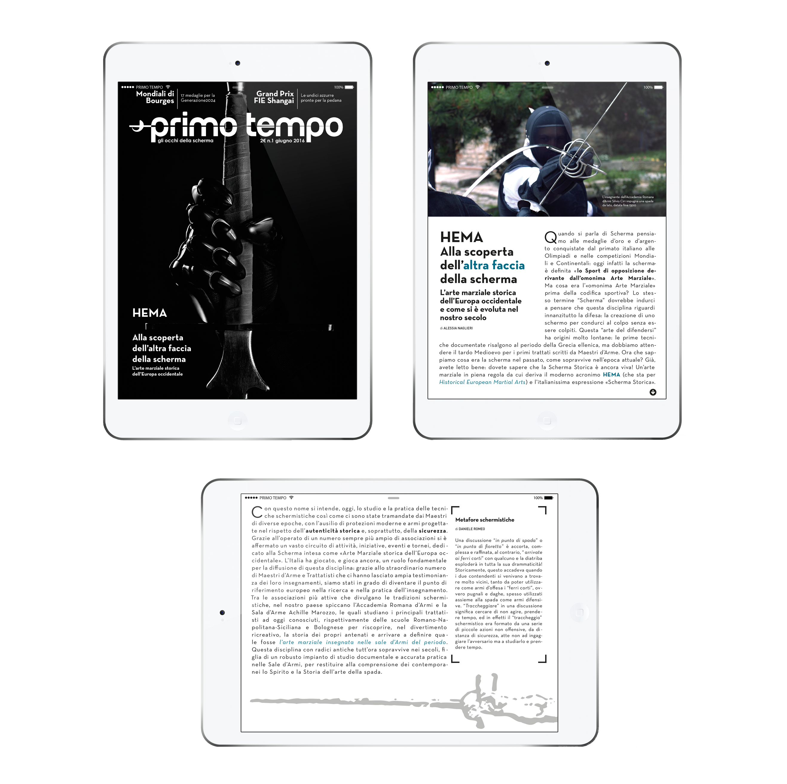

Magazine design and UX
|  |
Magazine project for mixed media The design for this magazine is modern and fresh. This a fencing magazine with a cover story talking about historical fencing. The two covers above show the two target audience at which they are intended. I’ve opted for an illustrated cover resembling a herald for the subscribers cover. Meanwhile, the newstand version has an engaging and powerful photography representing a black glove with a longsword. The grid for the internal pieces is composed of three columns with the illustrations built upon, creating a balance between text and visuals. |
|
|
Logo adaptation for mobile devices This is a mockup of the icon for this magazine in the Apple store, both for tablet and smartphones. |

|
Magazine’s device adaptation DA RIFORMULARE Designing the device adaptation has been a real challenge. The grid is still three columns, with the text flow covering them all to keep the . The covers and service has been adapted for each device in portrait and landscape as you can see in some examples below. And the splash page is the loading page for the magazine. |
|  |
Magazine project for mixed media
The design for this magazine is modern and fresh. This a fencing magazine with a cover story talking about historical fencing. The two covers above show the two target audience at which they are intended. I’ve opted for an illustrated cover resembling a herald for the subscribers cover. Meanwhile, the newstand version has an engaging and powerful photography representing a black glove with a longsword. The grid for the internal pieces is composed of three columns with the illustrations built upon, creating a balance between text and visuals.
Logo adaptation for mobile devices
This is a mockup of the icon for this magazine in the Apple store, both for tablet and smartphones.
Magazine’s device adaptation
DA RIFORMULARE
Device adaptation has been a challenge to me. The grid has been maintained to three columns, but the text flow mostly covers them all for keeping legibility. The covers and service has been adapted for each device in portrait and landscape as you can see in some examples below. And the splash page is the loading page for the magazine.